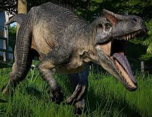

Triasico
El triasico, que duro aproximadamente desde hace 252 a 201 millones de años, es la primer era del mesozoico y marca el comienzo de la era de los dinosaurios. Esta etapa se caracteriza por la recuperacion de la vida despues de la extincion masiva del permico-triasico, que elimino el 90% de las especies marinas y terrestreas aproximadamente.
clima, fauna y flora
El triasico tenia mayormente un clima calido y seco, con vastos desiertos en el interior de pangea, un super continente que dominaba el mundo de esa epoca.
Por el lado de la fauna y la flora, ademas de los primeros dinosaurios, coexistian otros reptiles como los arcosaurios, los primeros mamiferos y los primeros pterosaurios(reptiles voladores). Ahora en la flora predominaban las coniferas, cicadaceas, ginkgos y helechos.
DINOSAURIOS DEL TRIASICO
EORAPTOR
Considerado uno de los dinosaurios mas primitivos, media aproximadamente 1 metreo de largo y era un agil carnivoro. Su nombre significa "ladron del alba", fue encontrado en Argentina
Jurasico
El jurasico duro aproximadamente desde los 201 a 145 millones de años, es la segunda era del mesozoico y ya es conocida como "la edad de los dinosuarios". Debido a la gran cantidad y diversidad de estos reptiles.
Clima, flora y Geografia
Tubo un clima calido y humedo, con una atmosfera rica en dioxido de carbono, no habia casquetes polares permanentes. Hubo bosques de coniferas y las primeras plantas con flores aparecieron al final del periodo.
La ruptura del super continente pangea comenzo durante esta era, dividiendose en dos grandes masa de tierra Laurasia al norte y Godwana al sur. esta fragmentacion permitio mas diversidad de especies.
FAUNA
En este periodo aparecio la vida marina y mas diversidad de herbivoros, carnivoros y pterosaurios
BRACHIOSAURUS
Brachiosaurus altithorax, castellanizado como braquiosaurio, es la única especie conocida del género extinto Brachiosaurus de dinosaurio saurópodo braquiosáurido, que vivió durante el Jurásico Superior, hace aproximadamente 154 a 153 millones de años, en lo que es hoy Norteamérica. Media de 18 a 22 metros y pesaba unas 80 toneladas

ALLOSAURUS
Allosaurus es un género extinto con cuatro especies válidas y varias otras posibles de dinosaurios terópodos alosáuridos, que vivieron a finales del período Jurásico, hace aproximadamente 161,2 y 145 millones de años, entre el Oxfordiense y el Titoniense, en lo que hoy es Norteamérica y Europa. Media unos 8,5 metros y peasaba una tonelada
Cretasico
El cretasico duro aproximadamente de 145 a 66 millones de años, es a tercera y ultima era deñ mesozoico. Es conocible por su gran diversidad de dinosaurios y otrasformas de vida, asi como el evento de la extincionmasiva que marco su final, eliminando a la mayoria de dinosaurios.
Clima, Geografia y flora
Durante el cretasico, el clima era generalmente calido y los niveles del mar ean altos, lo que resulto en la formacion de mares interiores, sin embargo hacie el final de este periodo el clima comenzo a enfriarse.
EL continente pangea termino de separarse y los dos nuevos continentes tomaron posiciones parecidad a las actuales.
Las plantas con flores (angiospermas) aparecierony se diversificaron, cambiando los ecosistemas terrestres. Estas plantas ofrecieron nuevas fuentes de alimento y habitats para muchos animales.
DINOSAURIOS DEL CRETASICO
En este periodo aparecieron dos dinosaurios muy famosos de los que vamos a hablar
TRICERATOPS
Triceratops es un género con dos especies conocidas de dinosaurios ceratopsianos ceratópsidos, que vivieron a finales del período Cretácico, hace aproximadamente entre 68 y 66 millones de años, durante el Maastrichtiense, en lo que hoy es Norteamérica. Media entre 2 a 3 metros podia pesar entre 6 y 12 toneladas
TYRANNOSAURUS REX
Tyrannosaurus rex es una especie y tipo del género extinto Tyrannosaurus de dinosaurio terópodo tiranosáurido, que vivió a finales del período Cretácico, hace aproximadamente entre 68 y 66 millones de años, en el Maastrichtiense, en lo que es hoy América del Norte. Llegaba a medir entre 12-13 metros y pesar de 6 a 8 toneladas